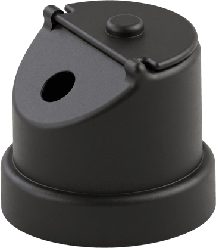
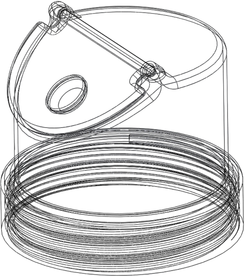

פקק מזיגה עדינה לגלון
ארגונומיה | מזיגה מבוקרת

הבעיה
במזיגה מפתח רגיל של גלון, האוויר שנכנס פנימה קוטע את הזרימה, והנוזל יוצא בגלים ונשפך.
הפתרון
מזיגה עדינה ורציפה ללא לחץ אוויר, ופתיחה וסגירה קלה.



ארגונומיה | מזיגה מבוקרת
במזיגה מפתח רגיל של גלון, האוויר שנכנס פנימה קוטע את הזרימה, והנוזל יוצא בגלים ונשפך.
מזיגה עדינה ורציפה ללא לחץ אוויר, ופתיחה וסגירה קלה.

